Info Txt
Twelve Product-details-PHP" ?>
LISIANTHUS
$12.00
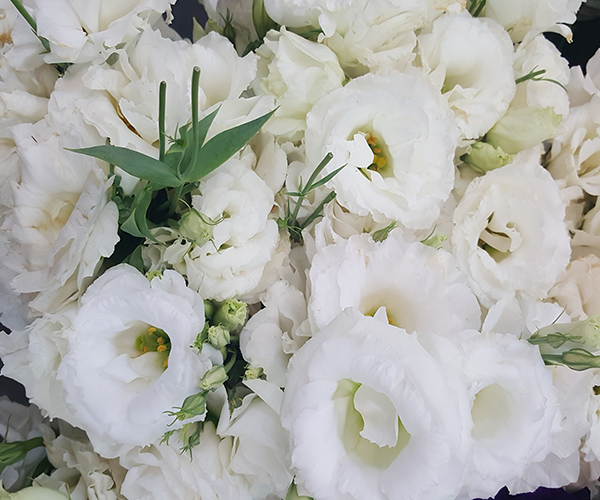
When bloomed to it's fullest, Lisianthus can resemble a rose. With long layered stems of bell shaped ruffled blooms and almond shaped buds, these are the perfect elegant addition to any centerpieces and wedding bouquets. Plus, our flowers are grown on eco-friendly, sustainable farms and freshly cut when you order.
- Color: white
- Flower: lisianthus - eustoma grandiflorum
PEGASUS
$26.00
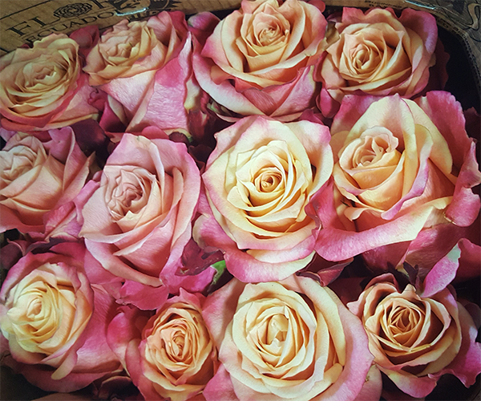
Simply sweet, the way things should be.
The soft pink petals of this premium bouquet are accented with a tinge of peach, resulting in a look that’s sweet as
cream. Gift these clean, confident Garden Roses to yourself or someone you love as a reminder that life is peachy.
Our flowers are grown on eco-friendly, sustainable farms and cut-to-order.
These orange roses are as bright and cheery as a sunny day at the beach. Sustainably grown in California, our
flowers are some of the freshest, most vibrant roses you'll ever find. Delivered next day from our farms on the
California coast to your recipient's door.
Unique "lava colored" roses that are just as hot! Send these two-tone roses in yellow and red (just like lava!).
- Color: pink orange
- Flower: rose - rosaceae
MAGNETIC
$26.00
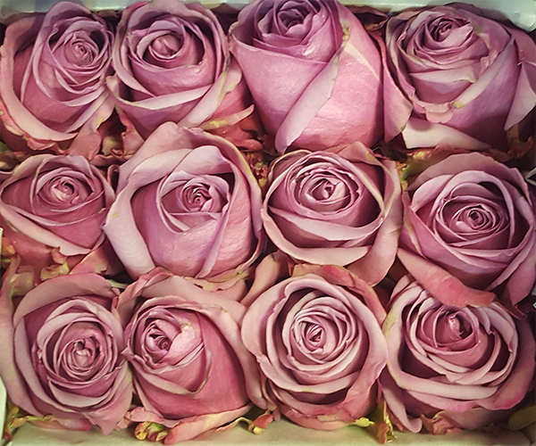
Roses with a California twist.
Simply put, these premium orange roses are top-notch. They are a magical sight when fully bloomed! Grown on the side
of a volcano and cut-to-order, this rose of South American flowers contains all the beauty and magic of a
breathtaking sunrise. Plus, our flowers are delivered straight from eco-friendly, sustainable farms to your
recipient's door.
Our light pink roses are full of life and natural beauty. They truly are a heavenly bunch! Sustainably grown in
California, these flowers are some of the freshest, most vibrant roses you'll ever find.
- Color: pink orange
- Flower: rose - rosaceae
DARK KNIGHT
$42.00
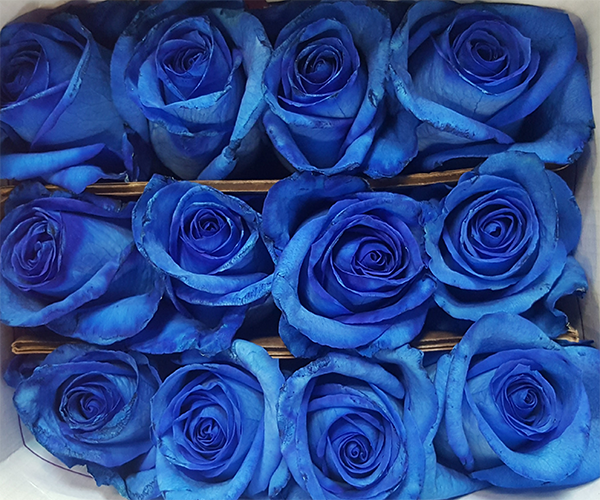
The Premium Rose Collection. It's the world's biggest, brightest 'genus rosa'! Theses blooms will make you go
wow. They start off as a darker shade, and open to be blue-to-violet wonders. A lil' magic trick, and a sweet one at
that! Our premium roses are sourced from a Fair Trade certified farm that practices responsible labor and
eco-friendly farming. A special gift available for delivery all across the USA!
- Color: dark blue / violet
- Flower: rose - rosaceae
DRAGONFLY
$22.00
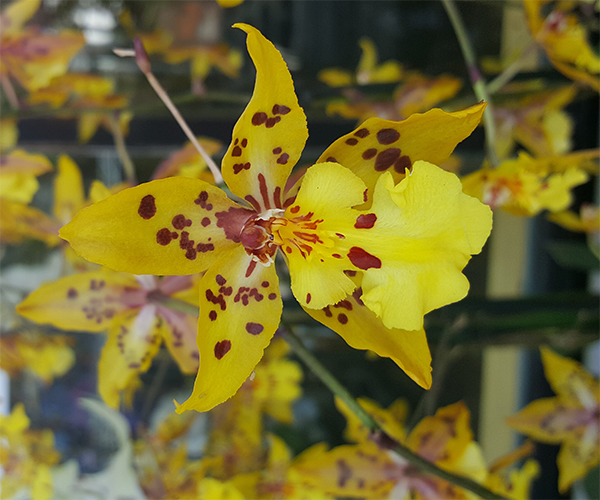
A staycation in a pot.
If you are looking to impress someone special, send them this living jewel! Our double-stemmed yellow orchid is
perfect for your home or office. Plus, it includes a biodegradable eco-pot complete with care instructions to
maximize the life of your gift. Ships next day from our farms on the California coast to your recipient's door.
- Color: yellow
- Flower: orchid - orchidaceae
CABANA
$12.00
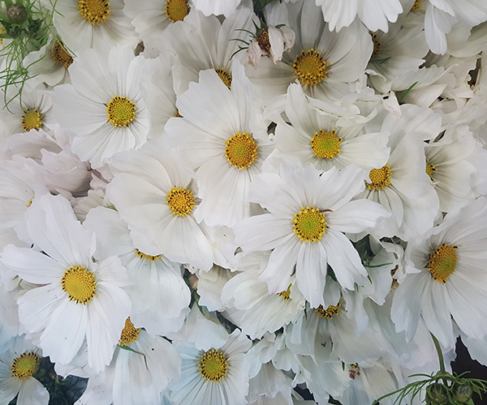
Style that's fresh!
Know someone in need of an instant pick-me-up? A gift of fresh daisies is the best way to brighten their day! Set in
a charming picket fence planter with a sweet daisy design, our white daisy plant will deliver smile after smile to
friends, family, anyone in you care about who could use some cheering up.
- Color: white
- Flower: daisy - asteraceae
CHAMPAGNE
$32.00
 Mixed color mini callas.
Send elegant and long lasting mini calla lilies they'll love. Perfect for any occasion and available in assorted
colors like yellow and white. Cut to order and delivered straight from our sustainable farms! Enjoy
Mixed color mini callas.
Send elegant and long lasting mini calla lilies they'll love. Perfect for any occasion and available in assorted
colors like yellow and white. Cut to order and delivered straight from our sustainable farms! Enjoy
- Color: white / yellow
- Flower: calla - araceae
HEAVEN SCENT
$26.00
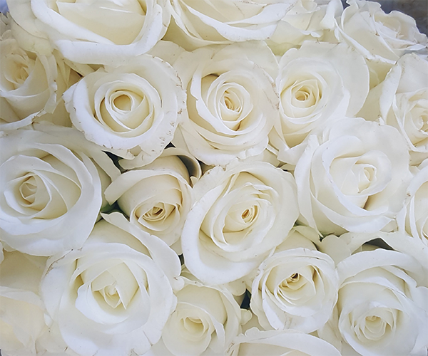
Elegant, irresistible, and undeniably classy.
Why not put happiness on full display? It’s the greatest feeling in the world! This premium Bouq celebrates the
beauty and time-honored appeal of gorgeous white Garden Roses, a flower that’s been making people smile for
centuries. Our flowers are grown on eco-friendly, sustainable farms and cut-to-order.
- Color: white
- Flower: rose - rosaceae
BUZZWORTHY
$26.00
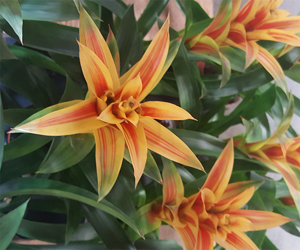
an exotic touch to the home
Bromeliad plants provide an exotic touch to the home and bring a sense of the tropics and sun-kissed climates.
Growing a bromeliad as a houseplant is easy and brings interesting texture and color to the interior garden.
- Color: yellow / orange
- Flower: bromeliad - monocot
DIVINE
$20.00
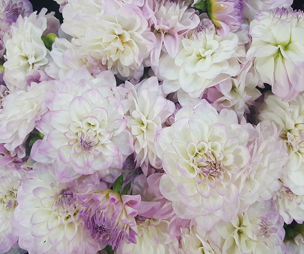
a never-ending succession
This tropical genus brings the mid-to-late-season garden a never-ending succession of flowers in glorious shades and
shapes. Dahlias vary from under 12″ to 7′ giants; their flowers may be demure buttons or huge, blowsy blooms. Most
are sold as tubers and should be planted in well-drained soil after the last spring frost.The blooms are an ivory
shade of white with lilac centers and hints of lilac at the tips of the petals. 'Eveline' is among the tallest
varieties we offer, with long stems that are excellent for cutting.
- Color: white / pink
- Flower: dahlia - asteraceae
JULIET
$12.00
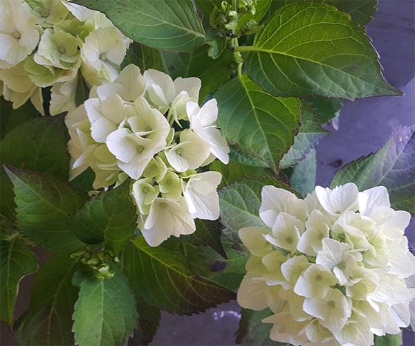
Topped with pure white blooms, this elegant hydrangea arrives ready for display in a dotted metal pot topped with
moss.Hydrangeas are extremely vigorous, long-lived shrubs that offer varied and extravagant blooms throughout summer
and into fall, when many shrubs have completed their show. Modern selections come in enticing shades of white,
cream, pink, blue, and red, and in lacecap and oakleaf shapes as well as the familiar mophead. The big, rounded
flower clusters make handsome dried arrangements.
- Color: white
- Flower: hydrangea - hydrangeaceae
SHERBET
$32.00
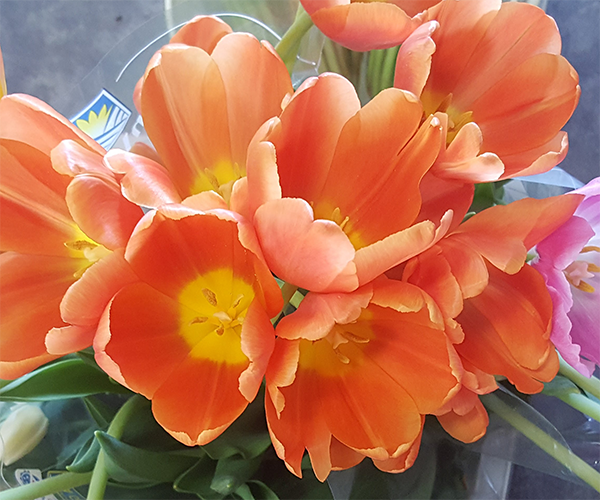
Our bright orange tulips have a bold, distinct color that lights up any room. This all-about-color Bouq has
taken trending to the next level. Joyful tulips explode in bursts of white, red, pink, purple, and orange –– color
for days! It's a bouquet that's basically impossible not to love.
- Color: orange / pink
- Flower: tulip - liliaceae